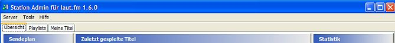
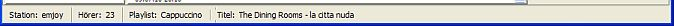
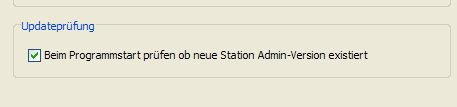

Das Hauptfenster


Das Hauptfenster von Station Admin bietet 3 verschiedene Ansichten:
Über die Menüleiste oben stehen noch einige weitere Funktionen zur Verfügung, z. B.:
Unten siehst Du eine Statuszeile. Dort wird der Name Deiner Station, die aktuelle Hörerzahl, die aktuelle Sendung sowie der aktuell gespielte Titel angezeigt. Sollte Deine Version von Station Admin nicht mehr aktuell sein wird dies auch hier angezeigt.
Übrigens: Ein Doppelklick auf die Sendung öffnet diese Sendung in der Playlists-Ansicht. Ein Doppelklick auf den Titel springt sogar auf den Titel in dieser Playlist.
Prüfung auf Updates
Beim Start von Station Admin wird überprüft ob Deine Version noch aktuell ist. Ist dies nicht der Fall wird eine Nachricht in der Statuszeile unten rechts angezeigt.
Falls Du diese automatische Überprüfung nicht möchtest so kannst Du das auch abstellen:

Du kannst jederzeit manuell überprüfen ob es eine neue Version gibt: